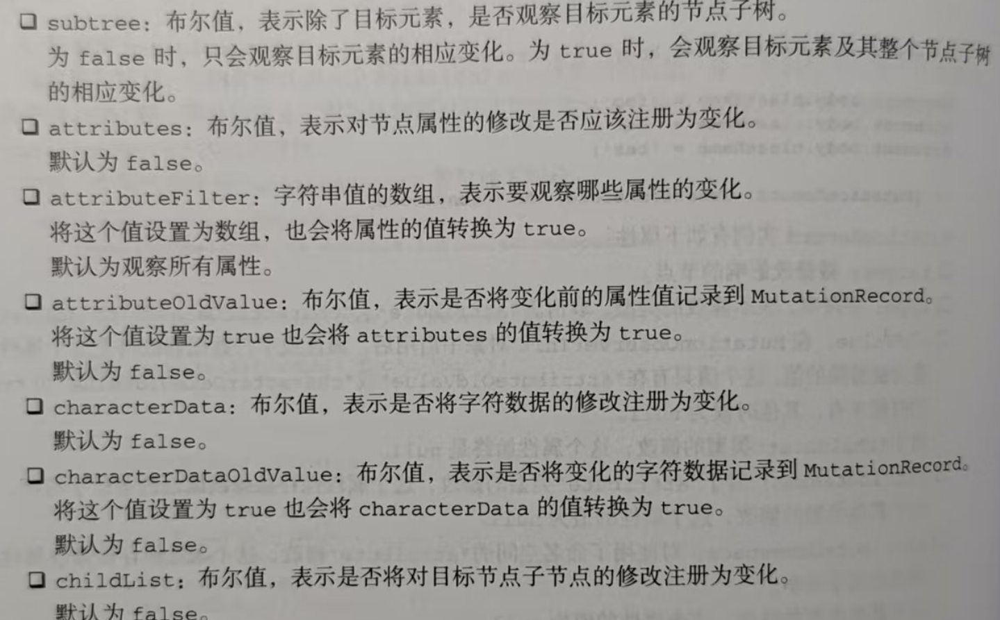

通过 MutationobserverInit 控制观察范围
MutationobserverInit 用于控制观察目标元素的哪些变化。宽泛地说，观察者可以观察属性变化 , 文本变化和子节点变化
MutationobserverInit对象含如下属性。

- childList 作用: 观察目标节点的直接子节点的添加和移除
类型: boolean
- attributes 作用: 观观察目标节点的属性变化
类型: boolean
- characterData 作用: 观察目标节点文本内容的变化
类型: boolean
- subtree 作用: 将观察范围扩展到目标节点的所有后代节点，而不仅仅是直接子节点
类型: boolean
- attributeFilter 作用: 观察目标节点的直接子节点的添加和移除指定要观察的特定属性名称数组（白名单）
类型: boolean
- attributeOldValue 作用: 记录属性变化前的旧值
类型: boolean
- characterDataOldValue 作用: 记录文本内容变化前的旧值
类型: boolean
注意 在调用observe()时，MutationObserverInit
对象中必须至少attributes (检测目标节点)、characterData (检测文本内容的变化)或childList (检测子节点的添加和删除)中的一个要为true(可以直接设置，也可以通过设置关联属性如
attributeOldValue 间接设置)。否则会抛出错误,因为没有变化会触发回调